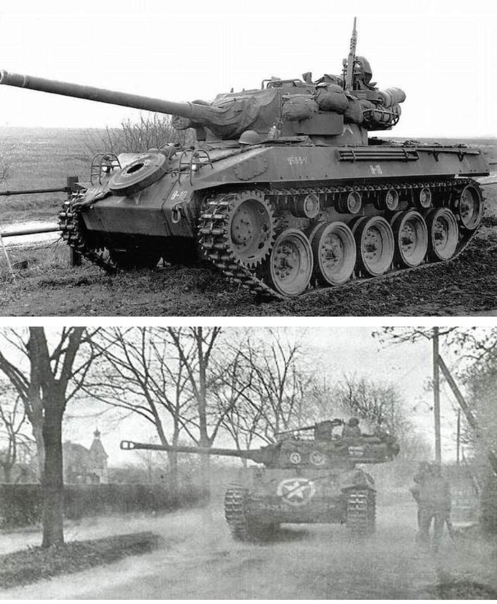
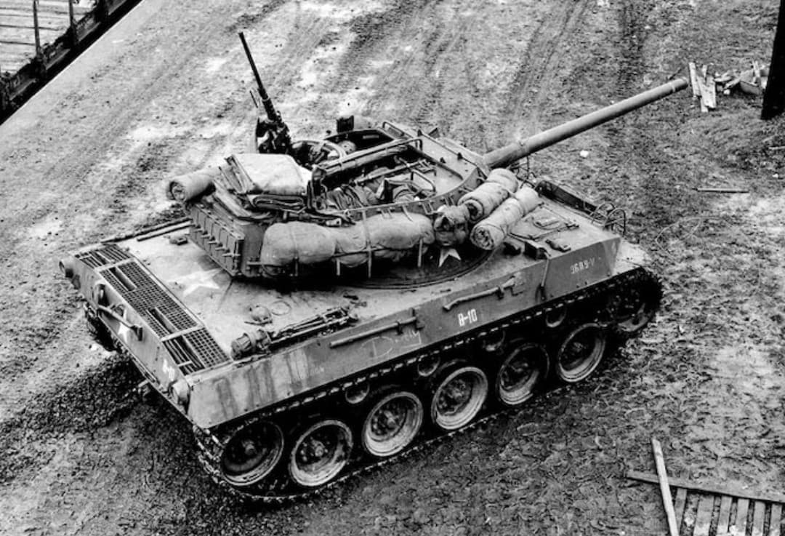
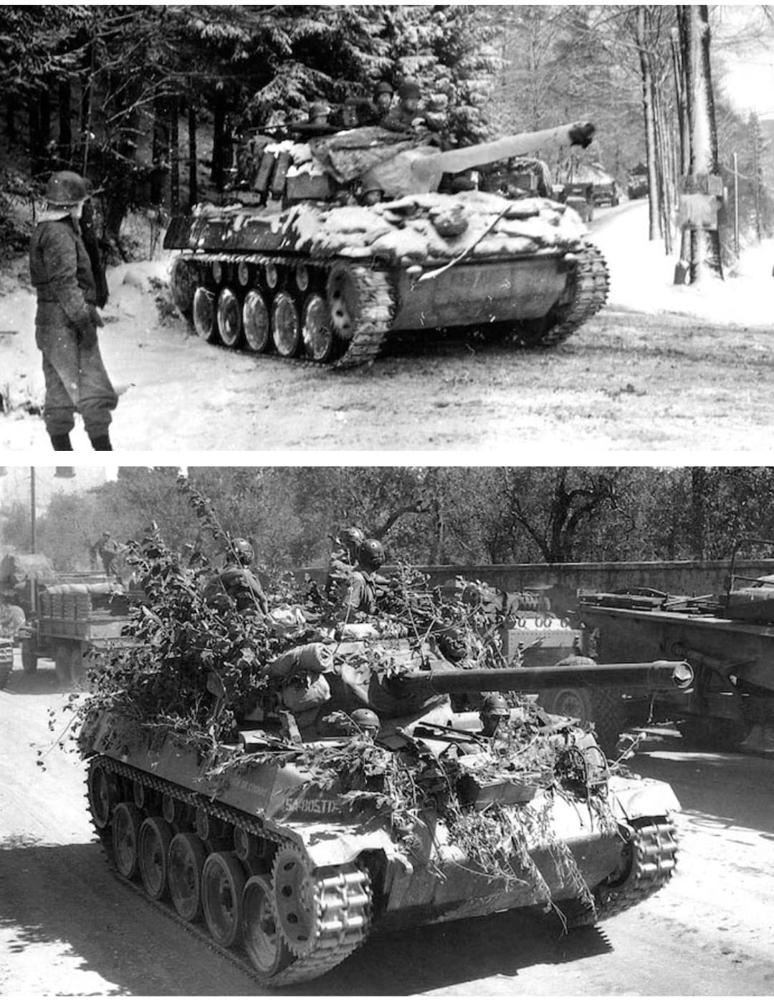

Le blindé chenillé le plus rapide de la Seconde Guerre mondiale, conçu pour la tactique de l'embuscade et du tir éclair

Le 76 mm Gun Motor Carriage M18 « Hellcat » est un chasseur de chars américain développé par la division Buick de General Motors. Conçu selon la doctrine du *Tank Destroyer Center* américain, le M18 privilégiait une vitesse de pointe inégalée et une grande maniabilité plutôt qu'un blindage lourd.
Capables de déborder les colonnes de blindés ennemis et de frapper sur leurs flancs vulnérables, les Hellcat ont affiché le meilleur ratio de victoires par perte de tous les chasseurs de chars américains de la Seconde Guerre mondiale.
Spécialement développé à partir d'un châssis léger sur mesure (au lieu d'un châssis de char moyen comme le M4 Sherman), le M18 était propulsé par un moteur en étoile Continental R-975 à essence de 400 chevaux. Associé à une transmission automatique novatrice Torqmatic, il atteignait la vitesse vertigineuse de **80 à 88 km/h sur route**, faisant de lui le chenillé le plus rapide de son époque.
D'une masse contenue de **17,7 tonnes**, son blindage très fin (9 à 25 mm) assurait uniquement une protection contre les éclats et les armes légères. Son armement principal consistait en un canon de **76 mm M1A1** à haute vitesse initiale monté dans une tourelle ouverte à 360°, complété par une mitrailleuse lourde Browning .50 cal (12,7 mm) pour la défense antiaérienne.

Arrivé sur le théâtre européen au printemps 1944, le M18 fit ses preuves lors de la campagne de Normandie, du percement d'Avranches et de l'avance rapide à travers la France.
Il s'illustra de manière décisive lors de la **Bataille des Ardennes** en décembre 1944, notamment au sein du 704th Tank Destroyer Battalion engagé près de Noville et Bastogne. En exploitant leur vitesse exceptionnelle pour changer rapidement de position, les M18 réussirent à détruire de nombreux chars lourds allemands Panther et Tiger tout en minimisant leurs propres pertes.

Produit à **2 507 exemplaires** entre juillet 1943 et octobre 1944, le Hellcat servit également de base au transport de troupes et de matériel blindé **M39 Armored Utility Vehicle**.
Après 1945, de nombreux M18 furent cédés à des pays alliés (notamment en Yougoslavie, où certains exemplaires sont restés en service ou en réserve jusqu'aux conflits des Balkans dans les années 1990).
Page du Musée HOP WW2 – Section Véhicules Terrestres Américains